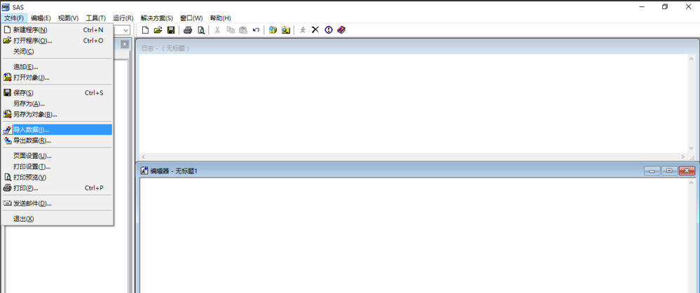
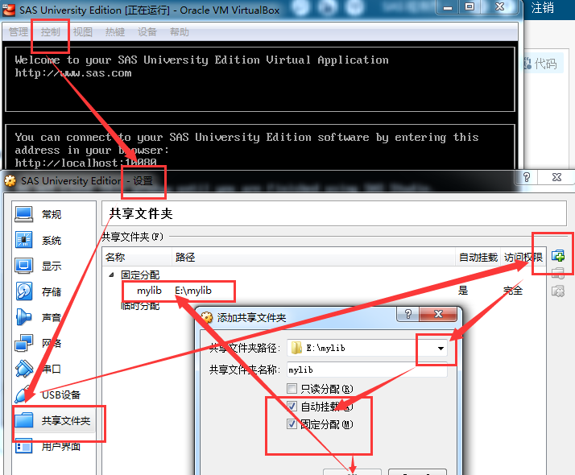
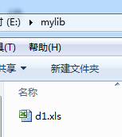
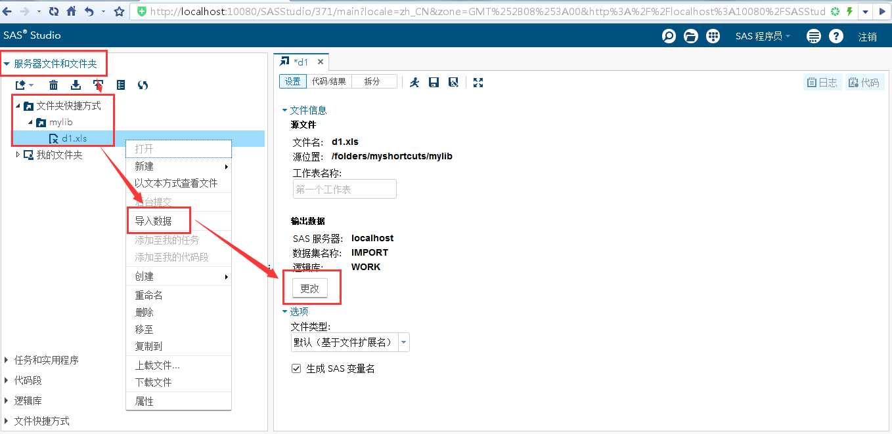

2018 SAS实验考试要点 made by dch
1. 复制题中数据到Excel 2. Excel中将中文变量替换成英文变量，便于程序处理 3. 保存为xls文件格式文件，SAS9.2识别不了xlsx格式的文件
1. SAS 9.2方式：

2. SAS University方式： - 先要设置共享文件夹

- 将xls文件放入共享文件夹

- 右键导入数据，默认输出名为“IMPORT”的数据集，可以自己更改输出数据集的名字

操作不熟练的话，你任意选择一个变量进行这两个分析即可！
均值、方差、标准差、变异系数、偏度、峰度
proc means data=你的数据集 mean ...; var 你的变量; run;
上面的这几个统计量最好自己课后查下符号是什么！
作直方图，并作拟合正态分布曲线
proc univariate data=你的数据集; var 你的变量; histogram 你的变量 / normal; run;
只要把图放上来即可
proc reg data=你的数据集; model 因变量=自变量; run;
要求写出回归方程，根据P值解析系数的显著性
proc reg data=你的数据集; model 因变量=自变量 / selection=stepwise; run;
要求写出经过逐步回归处理后最后一步得到的回归方程，根据P值解析系数的显著性
proc princomp data=你的数据集; var 你的变量; run;
结果可以截图放上来
根据0.85原则挑选主成份，将你挑选的主成份表示为原变量的线性组合，同时给出对应的累积贡献率
谱系聚类、聚类数、谱系图
proc cluster data=你的数据集 method=聚类的方法 std pseudo ccc outtree=输出的数据集; var 你的变量; id 你的组别; run; proc tree data=输出的数据集 horizontal graphics; run;
要求会根据题目要求选择对应的聚类方法，会根据pseudo ccc两个指标分别说明应该选择划分多少类别较为合适【CCC（峰值表示建议聚类数）、伪F统计量（越大越好）、伪T统计量（越小分类越合理）】，要给出聚类图